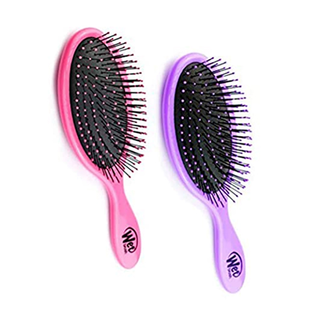

1. Detangler Hairhairbrushes

Recommended Hair Types: All, especially medium to long hair.
What is a Detangler Hairbrush Used for?
A good detangling brush is a must-have for everyone who has medium to long hair. These versatile brushes have thin, flexible bristles that gently separate tangled hair while brushing. Detangling brushes work well to tame children’s hair painlessly.
They can also be used on wet hair with a conditioner to remove knots after washing.